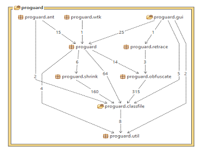

Introduzione
Il software in versione 2.0.1 ha introdotto le seguenti funionalità rispetto alla versione precedente:
- Retrace: de-offuscamento degli stack trace e ripristino di stack trace offuscati;
- J2ME Wireless Toolkit: plugin di offuscamento di midlet
- Ant task: task per integrare ProGuard in un processo di build;
- GUI: ProGuard è utilizzabile da riga di comando o tramite un'interfaccia grafica;
- Gestione automatica delle chiamate Class.forName;
- Gestione dei file: ProGuard copia tutti i file non .class all'interno del file .jar di output. Il nome e il
contenuto rimangono inalterati;
- Offuscamento incrementale.
Architettura SW
Il modello architetturale del software in versione 2.0.1 è sempre strutturato a livelli rispecchiando il modello architetturale open-strict.
La Fig. 1.0.1 è mostra l'architettura generale di ProGuard.

Rispetto alla verisone precedente, sono stati introdotti i seguenti sottosistemi:
- Front-End:
- proguard.gui: gestione delle componenti grafiche
- proguard.ant: gestione delle attività in Ant;
- Function:
- proguard.retrace: de-offuscamento degli stack trace e ripristino di quelli offuscati.
- Business Model: al suo interno sono state aggiunte classi di gestione automatica delle chiamate Class.forName e di gestione file.
Inoltre, sono state aggiunte componenti esterne che interagiscono solo con il Front-End, in modo tale da esportare verso
l'esterno le funzionalità del sistema software:
- External Components:
- proguard.wtk: plugin per l'offuscamento di Midlet;